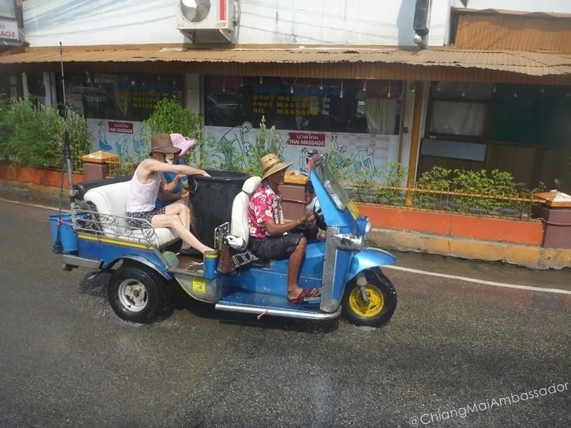

Living Better in Thailand: The Optimized Life
Stop surviving. Start thriving. Master costs, build community, navigate healthcare, embrace food culture, and build the sustainable life that makes Chiang Mai feel like home.

TL;DR - The Framework
Stop surviving, start thriving. Master costs by shopping where locals shop. Build community intentionally. Navigate healthcare with a trusted contact. Rent a motorbike after two weeks. Embrace food culture. Learn enough Thai to be polite. Respect seasonal rhythms. For long-term stays, secure DTV or ED visa and plan for year two. Integration beats isolation.
Admin and Bureaucracy: The Essential List
This is what nobody tells you before you arrive. The paperwork side of long-term life in Chiang Mai is manageable once you know the sequence. Here is what you need and where to go.
- Thai Driving Licence: The DLT Hang Dong branch handles foreigners. Book via the DLT Smart Queue app. Bring Residency Certificate, Medical Certificate (100-300 THB from any clinic), passport copies signed in blue ink. The process takes most of a day. Full walkthrough: Getting Your Thai Driving Licence in Chiang Mai
- Residency Certificate: Required for your driving licence, some visa extensions, and bank accounts. Issued by Chiang Mai Immigration (Airport Road) or your home country's embassy. Allow 2-3 business days. Bring a stamped self-addressed envelope. For next-day service: Colonel Visa (across from Immigration) or Napa Visa Services (Chang Klan area). Full residency certificate guide.
- 90-Day Reporting: All Non-Immigrant visa holders must report their address to Immigration every 90 days. Do it online at immigration.go.th or in person at the Airport Road office. Failure results in a 2,000 THB fine. Full 90-day reporting guide.
- TM30: Your landlord files this when you move in. If they do not, you file it yourself at Airport Road Immigration within 24 hours of arrival at a new address. Needed for visa extensions. TDAC Digital Arrival Card guide
- Visa Extensions: Most extensions happen at Promenada Mall Immigration (not Airport Road). Full visa options: Visa Hub or Thai Visa Advice
- Work Permit Medical Certificate: Required if you are applying for a work permit. Work Permit Medical Certificate guide
Cost Mastery: Stop Paying Farang Premium
Your first month costs 30-50% more than month six. Not because inflation. Because you're new and don't know where to shop.
Where Locals Shop (Not Tourists)
Food: Kad Luang (fresh market, old city), Ton Payom Market (locals, morning crowds). 7-Eleven for snacks. Tesco Lotus (hypermarket) for bulk. Avoid Night Bazaar restaurants. Learn 3-4 food stalls near your home. Order in Thai (or point).
Read more: Food guides and restaurant reviews
Clothes & goods: Warorot Market (wholesale, chaotic, authentic). Arcade arcade mall (cheap clothing). Second-hand expat groups on Facebook. Don't shop Nimman Road boutiques unless you enjoy paying 3x markup.
Phone & internet: 7-Eleven, AIS/Dtac/True kiosks. Unlimited home internet costs 600-900 THB monthly. Negotiate bundle rates for longer contracts.
Budget Optimization by Category
| Category | Tourist Price | Local Price | How to Save |
|---|---|---|---|
| Khao soi (curry noodles) | 100-150 THB | 30-50 THB | Order at local stalls, not restaurants |
| Massage (1 hour) | 300-500 THB | 150-250 THB | Go to small shophouses, not spas |
| Motorbike rental (daily) | 250-350 THB | 150-200 THB | Monthly contracts, local rental shops |
| Apartment rent (1BR) | 1,200-2,000 THB | 600-1,200 THB | Negotiate long-term, avoid Nimman/Tourist zones |
Building Community: The Right Way
Community doesn't happen by accident. Digital nomad groups dissolve in months. Real friendships build over shared meals and repeated interactions.
Where to Connect
Coworking spaces: Punspace, Hub53, Alt_ Chiang Mai, Yellow, or Socialer Coliving. Hot desks cost 150-300 THB daily. Membership loops you into working expats. Mainstream for remote workers.
Language exchange: Local Thai teachers. Universities offer conversation partners. Join a Thai language class. You'll meet locals and fellow learners. Deep cut option.
Sports & activities: Football clubs, yoga studios, climbing gyms, running groups. Chiang Mai has strong expat presence in fitness. Bonds form through repetition, not apps.
Facebook groups: Search "Chiang Mai Expats," "Chiang Mai Digital Nomads," neighbourhood-specific groups. Useful for housing, job posting, socializing. Quality varies widely. Lurk first, join conversations that interest you.
Full breakdown of where to meet people: Getting Social in Chiang Mai
The Integration Paradox
The fastest way to feel integrated is to stop looking for integration and just live your life. Shop at your market. Eat at your food stall. Wave at your neighbours. Learn your landlord's name. Friendships emerge from routine, not from "networking."
Healthcare: Navigating Thai Doctors
Thai healthcare is inexpensive and professional. A doctor visit costs 200-400 THB. Pharmacy medications cost 30-70% less than the West. The catch: you need a trusted doctor.
Finding Your Doctor
Bangkok Hospital Chiang Mai is the largest private hospital. English-speaking doctors, clean, modern. Consultation costs 300-500 THB. Conservative on antibiotics compared to Western docs.
Chiang Mai Ram Hospital is another major option. Ask your landlord, coworking space, or expat friends for recommendations. You want continuity, not a different doctor each visit.
Serious Medical Cases
Chiang Mai handles most routine care well. For complex cases, Bangkok is better. Major surgery? Consider Thailand still. Cost is 40-60% of US/Australia prices. Many expats are here specifically for healthcare access.
Read more: Budget Chiang Mai Medical Services
Neighbourhood Deep Dive
You've arrived. Now choose your home neighbourhood strategically.
Read more: Neighbourhoods: Full guide with costs, vibe, proximity
Remote Work & Time Zones
Thailand is UTC+7. That means:
- Sydney (UTC+10) is 3 hours ahead. No problem.
- London (UTC+0) is 7 hours behind. Evening calls are morning here.
- US East Coast (UTC-5) is 12 hours behind. Your morning is their previous day. Plan carefully.
- US West Coast (UTC-8) is 15 hours behind. Phone calls are rare and awkward.
Many remote workers choose 5 AM start times to overlap with Western morning hours. Others embrace the "local first" approach and let clients adjust. Your choice.
Internet is reliable. Dtac/AIS fiber is 100+ Mbps. Coffee shops have WiFi. Coworking spaces are professional. Set up home backup internet (mobile hotspot) for important meetings.
Motorcycle Life: Earning Your License
After two weeks, consider renting a motorbike. Chiang Mai is small and moto-friendly for confident riders.
Read more: Renting a Motorbike, Motorcycle Registration
First rental: 150-250 THB daily from small shophouses near your area. Weekly contracts drop to 1,000-1,500 THB. Monthly commitment (3-6 months) nets 800-1,200 THB/month for a decent bike.
Insurance costs 2,000-4,000 THB for six months. Thai driving rules are flexible but accidents are common. Helmet up. No drinking and riding. Expect a few small scrapes as you learn traffic.
Food Culture: Eating Like You Live Here
Food is where Chiang Mai opens up. Learn to love khao soi, larb, sai oua (local sausage), and mango sticky rice.
Cooking at home: Rent a place with a kitchenette. Fresh ingredients from morning markets. Khao (rice) costs nothing. Vegetables are seasonal and cheap. Learning to cook Thai food is joyful, meditative, and social (your Thai friends will teach you).
Eating out: Order at food stalls. Learn three phrases: "Pet nit noi" (a little spicy), "Mai sai nam pla" (no fish sauce), "Gra-bah" (thank you). Eating local costs 30-60 THB per meal. Eating Western costs 150-400 THB.
Read more: Food guides, restaurant reviews, and local picks
Markets: Walk Kad Luang in the morning. Smell the herbs. Chat with vendors. Buy what's in season. Bring a cloth bag. Pay in cash. Smile a lot.
Learning Thai: Why & How
Why learn Thai? English works for tourists and young Thais. Long-term living requires Thai. Ordering food, negotiating rent, understanding paperwork. Plus, learning Thai is respectful and opens social doors.
How much? Most expats get to "survival Thai" (200-300 words, basic phrases) within three months of daily exposure and casual study. Fluency takes 1-2 years of disciplined study. Most expats plateau at "functional Thai" (can order, negotiate, joke, but miss nuance).
Schools: Chiang Mai University has affordable courses. Many private tutors charge 300-500 THB/hour. Self-study (apps like Duolingo + YouTube) works if you're disciplined. Best method: formal class + practice with locals.
Read more: Learning Languages
Seasonal Rhythms: Plan Around Them
November-February
Cool season. Perfect weather. Every expat arrives now. City is crowded. Prices inflated. Air is clear.
March-May
Hot season. Temperatures exceed 40C (104F). Air quality declines in March-April due to agricultural burning (smoky season). Some expats flee. Those who stay adjust (air purifiers, early mornings, AC). Rents drop 20-30%.
Read more: Smoky Season Chiang Mai
June-October
Rainy season. Warm, wet, lush. Fewer tourists. Rents are cheapest. Rain comes in bursts, not all day. Green season is beautiful if you're not sun-dependent.
April (Songkran)
Thai New Year. Water festival. City-wide celebration / water war. Plan time off or join in. Either way, the city shuts down April 13-15 minimum.
Read more: Songkran
Relationships & Dating: Cultural Norms
Thai culture values harmony and saving face. Direct confrontation is rare. Relationships move fast or stay surface-level. Expat relationships (with other foreigners) have different norms than Thai-expat relationships.
Dating Thai women comes with family expectations, financial obligations, and cultural differences that require genuine respect, not tourism mindset. If you're not committed to understanding Thai values, stick to dating fellow expats.
Long-Term Residence: DTV & ED Visas
After 6-12 months, decide if you're staying. If yes, secure a long-term visa.
ED Visa: Enroll in Thai school, university, or martial arts. Renewable annually. Cost: 50,000-150,000 THB for school/year. Flexible, culturally respectful.
DTV: Long-term tourism. Proof of income (USD 1,800+/month). 180 days renewable. No education commitment. Straightforward if you have money.
Business Visa: Start Thai company or get Thai employer sponsorship. Most complex but most legally secure for long-term work.
Pets in Chiang Mai
Chiang Mai is surprisingly pet-friendly once you know how to navigate the landlord landscape and find the right vet. Three dedicated guides cover everything:
- Travelling to Thailand with Pets - import permits, airline requirements, health certificates, Suvarnabhumi process.
- Finding a Pet-Friendly Home in Chiang Mai - landlord attitudes, lease clauses, deposits, best areas.
- Vets and Pet Care in Chiang Mai - Tongkaew, CMU Vet Hospital, emergency clinics, costs, dog-friendly cafes.
Language and Education
Learning Thai pays off quickly in daily life. Read more: Learning Languages in Chiang Mai. For staying long-term through study: Language Schools and ED Visa in Chiang Mai.
Start Here, Navigate There
You're settled, working, eating, living. Explore beyond Chiang Mai when ready. Chiang Province has waterfalls and hill tribes. Bangkok is accessible for visa runs and urban breaks. Pai (north) and Sukhothai (south) are close. But Chiang Mai is your anchor.
Explore our guides, food recommendations, and lifestyle content. They're here to help you live better.
Just arrived and need to sort your first week first? Arriving in Chiang Mai: Week 1 Survival Guide
Last verified: May 2026